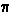
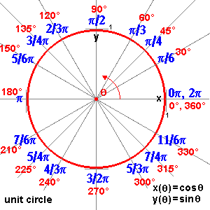

a circle
a circlea circle
A circle is the locus of all points equidistant from a central point.
arc: a curved line that is part of the circumference of a circle
chord: a line segment within a circle that touches 2 points on the circle.
circumference: the distance around the circle.
diameter: the longest distance from one end of a circle to the other.
origin: the center of the circle
pi (): A number, 3.141592..., equal to (the circumference) / (the diameter) of any circle.
radius: distance from center of circle to any point on it.
sector: is like a slice of pie (a circle wedge).
tangent of circle: a line perpendicular to the radius that touches ONLY one point on the circle.
Diameter = 2 x radius of circle
for a circle with center (j, k) and radius (r):
(x-j)^2 + (y-k)^2 = r^2
for a circle with center (0, 0):
r() = radius
for a circle with center with polar coordinates: (c, ) and radius a:
r2 - 2cr cos( - ) + c2 =
a2
for a circle with origin (j, k) and radius r:
x(t) = r cos(t) + j y(t) = r sin(t) +
k
